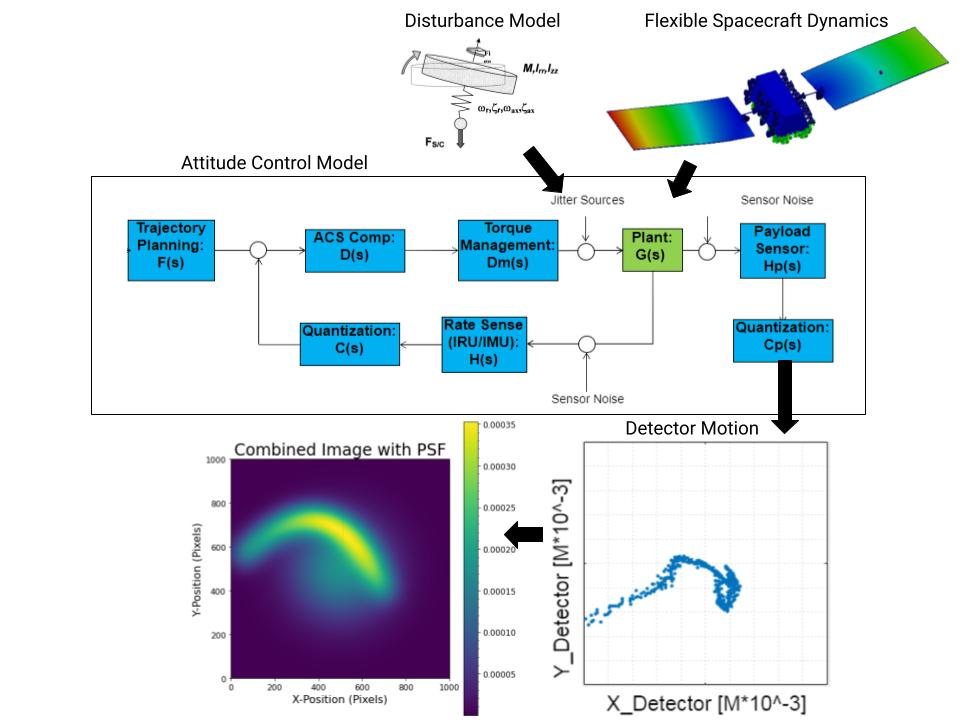
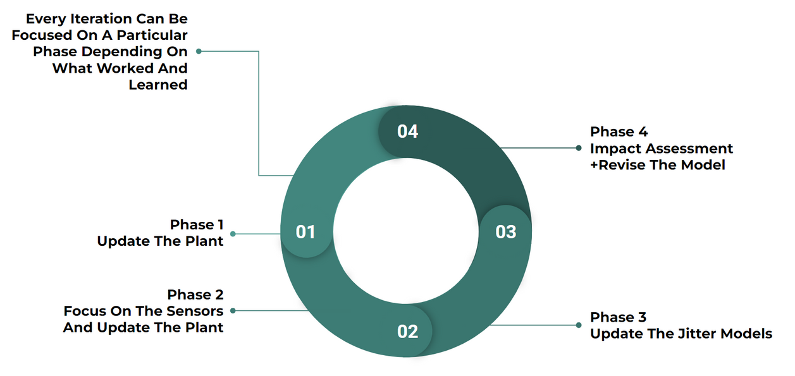

UC Berkeley / Honeywell capstone · August 2023–May 2024
Satellite jitter
Follow the disturbance.
See its effect on the image.
Small spacecraft motions can blur an image. SPACEJAM connected disturbances, flexible structural dynamics and attitude control to motion in the detector frame, so mitigation could be assessed through its image consequences.
Role
Senior Capstone Co-Lead
Work covered
Modeling, mitigation comparison and technical communication.
Coupled model
Connect the disturbance to the spacecraft response.
The team built a three-axis model of a generic spacecraft in Simulink. The analysis linked attitude control, flexible structural motion and disturbance inputs to examine satellite jitter and compare passive and active mitigation strategies.

Image blur
Carry motion into the detector frame.
Simulink and Python analysis connected the spacecraft response to detector-frame motion and the point spread function: how a point in the scene spreads across an image. This linked the mechanical and control model to image blur.
Model iteration
Refine the model, then reassess the image.
The process cycled through updates to the spacecraft plant, refinement of the sensor and plant models, and updates to the jitter models. Each assessment fed back into further revisions, connecting changes in the modeled system to their imaging consequences.

2026 simulation verification
Compare attitude hold against the same disturbances.
In a 2026 verification of the recovered capstone model, combined-disturbance attitude-hold error fell from 6.48 to 1.00 arcseconds vector RMS, an 84.5% reduction against the matched open-loop case.
The comparison used the final 60 seconds of a 120-second simulation with prescribed wheel and cryocooler disturbance torque, sensor noise disabled, and a simplified flexible model. The comparison measures spacecraft attitude error in the simplified simulation.
Team
Turn the analysis into recommendations.
As capstone co-lead, Gavin worked on dynamics modeling and led documentation and stakeholder communication of design recommendations and test strategies. The 2026 verification continued work on the recovered team model; the inherited model initializer retains W. Soh’s credit.
The SPACEJAM team comprised Gavin Yam, Palvi, Nicholas Capedevila and Ke Hu, advised by Warren Soh, Jameson Lee and Professor Tarek Zohdi.